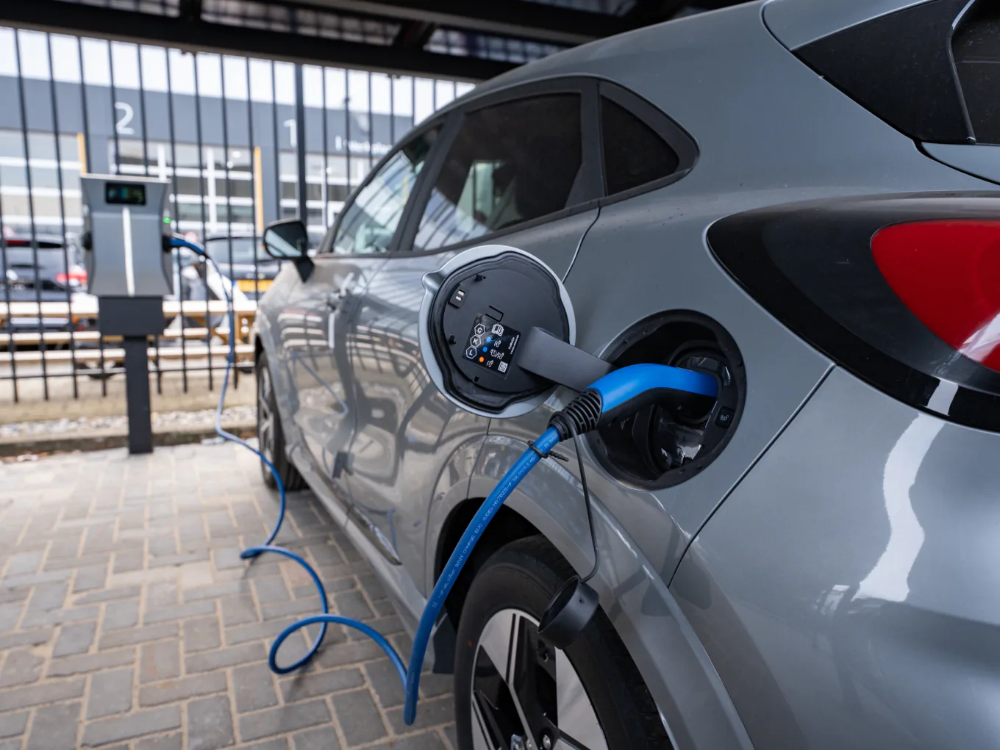

Laat het park meegroeien met uw gasten. Binnen de aansluiting die er al ligt.
Gasten komen elektrisch aan, koken elektrisch en verwachten in elke accommodatie hetzelfde comfort als thuis. De aansluiting van het park is daar zelden op gebouwd. Vibe maakt ruimte binnen de capaciteit die er al is — met opslag, eigen opwek en sturing die het seizoen volgt.
Een park verbruikt niet het hele jaar hetzelfde.
De vraag op een recreatieterrein beweegt mee met het seizoen, met het weer en met de bezetting van die week. De aansluiting staat ondertussen stil op één waarde.
De zomer bepaalt de piek
In het hoogseizoen is alles bezet. Koken, warm water, airco en wellness vallen samen op dezelfde avonduren. Die weken bepalen wat uw aansluiting het hele jaar moet kunnen.
Daarbuiten staat capaciteit stil
In de rustige maanden vraagt het park een fractie van wat er gecontracteerd is. U betaalt dan voor vermogen waar op dat moment niemand om vraagt.
Gasten komen elektrisch aan
Steeds meer gasten arriveren elektrisch en verwachten te kunnen laden bij hun verblijf. Dat verbruik komt bovenop de piek die er 's avonds toch al was.
Vol in juli. Stil in november. De kabel kent dat verschil niet.
Een recreatieterrein heeft geen vlak verbruik maar een jaarcurve. De gecontracteerde waarde wordt bepaald door de drukste avond van het hoogseizoen en blijft daarna het hele jaar staan. Opslag en sturing maken van die vaste grens iets wat met het seizoen meebeweegt.
Schematische weergave van het seizoensritme op een recreatieterrein. Geen meetdata van een bestaande installatie.
De piek is kort. De rekening loopt het hele jaar door.
Een batterij achter de meter neemt de toppen over van de aansluiting. Niet door minder te doen op het park, maar door te verschuiven wanneer de energie van de kabel komt.
De avond in het hoogseizoen
Wordt er overal tegelijk gekookt, gedoucht en geladen, dan levert de batterij het verschil. Op de aansluiting blijft de afname vlak, ook in de drukste week.
Zon van overdag, vraag in de avond
Opwek van de daken komt midden op de dag binnen, wanneer gasten op pad zijn. Opslag bewaart die energie tot het park er 's avonds om vraagt.
Laagseizoen is geen verloren tijd
Buiten het seizoen is er ruimte over onder dezelfde grenswaarde. De regelstrategie is daarom niet het hele jaar dezelfde.

Laden hoort bij het verblijf.
Laadpunten bij de accommodatie
Gasten blijven dagen, geen kwartier. Dat is precies wat laden op een park eenvoudig maakt: een auto die een hele nacht stilstaat, hoeft niet op vol vermogen te laden. Door het laadvermogen te verdelen over de uren waarin het park toch rust, past laden binnen dezelfde aansluiting — zonder dat er elders op het terrein capaciteit wegvalt.

De sturing kent het seizoen
VIBE.CONTROL bewaakt de grenswaarde van de aansluiting en verdeelt wat eronder past: eerst de voorzieningen waar gasten op rekenen, dan het laden. In rustige weken krijgt laden alle ruimte; in de drukste week schuift het naar de uren waarop het park slaapt.
Dormio Medemblik.
Het resort kreeg een te kleine bouwaansluiting. In plaats van te wachten op meer vermogen is het hele park achter die ene aansluiting gebracht: opwek op de accommodaties, batterijopslag voor peak-shaving en nachtverbruik, en software die verbruik, laden en opslag automatisch balanceert. Opgeleverd in oktober 2024.

Dormio Medemblik — het hele park achter één bouwaansluiting. Zonnepanelen op de accommodaties, batterijopslag voor de piek en software die beide op elkaar afstemt.
Buiten de recreatie, hetzelfde uitgangspunt.
Deze twee locaties zijn geen recreatieprojecten — een bedrijfspand en een automotive-vestiging. Ze staan hier omdat ze laten zien wat laden binnen een bestaande aansluiting in de praktijk betekent.

Ratio 16
Een laadplein van 132 kW met 12 laadplekken, binnen een transportvermogen van 51 kW. Andere sector, hetzelfde uitgangspunt: laden binnen wat er al ligt.
Bekijk het project →
Hedin Amsterdam
20 laadplekken binnen een bestaande aansluiting van 215 kW. Geen recreatieproject, wel het bewijs dat een vol laadterrein binnen bestaande capaciteit past.
Bekijk het project →Goed om te weten.
Kunnen wij laadpunten plaatsen zonder de aansluiting te verzwaren?
Vaak wel. Door opslag achter de meter te zetten en het laadvermogen te verdelen over de uren dat auto's toch stilstaan, past laden binnen de capaciteit die er al is — zonder de aansluiting te overschrijden. Hoeveel ruimte er bij u is, volgt uit het kwartiersprofiel van het park en uw bezettingscijfers.
Wat gebeurt er buiten het hoogseizoen?
Dan vraagt het park weinig en blijft er ruimte over onder dezelfde grenswaarde. De sturing gebruikt die ruimte: laden mag dan vrijuit, en de batterij werkt vooral om eigen opwek vast te houden. De regelstrategie staat niet het hele jaar hetzelfde ingesteld.
Wij breiden uit of bouwen nieuw. Wanneer moeten we hierover nadenken?
Zo vroeg mogelijk. Een bouwaansluiting legt de capaciteit van een park voor jaren vast. Bij Dormio Medemblik is het hele park achter één bouwaansluiting gebracht; dat soort keuzes maakt u het makkelijkst voordat de kabel ligt.
Merken gasten er iets van?
Dat is het uitgangspunt: nee. Verlichting, warm water, klimaat en wellness houden voorrang in de regelstrategie. Laden schaalt terug voordat er aan het comfort van de gast wordt geraakt.
Moeten wij zelf investeren?
Niet per se. Naast een reguliere koop is exploitatie mogelijk: Vibe investeert, bouwt en beheert de installatie, en u betaalt voor het gebruik ervan. Of dat in uw situatie uitkomt, beoordelen wij per park — het hangt af van uw profiel, uw plannen en de looptijd die u wilt.
Hoeveel ruimte heeft uw park nog binnen de aansluiting?
Stuur ons uw aansluitgegevens, kwartierdata en de plannen die u heeft voor accommodaties, comfort en laden. Wij rekenen door wat er binnen de bestaande capaciteit mogelijk is — en zeggen het ook wanneer het antwoord nee is.
Vrijblijvend. Telefonisch bereikbaar op werkdagen.